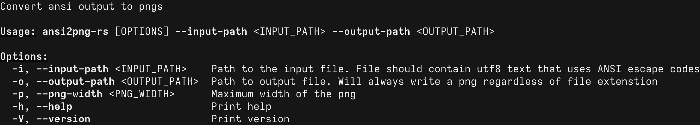

Read ansi sequences from a file and generate a png from it.
Generated from resources/out.ansi:
Generated from resources/ansi2png_help.ansi: 
Generated from resources/msgcat.ansi:
Generated from resources/tests.ansi: